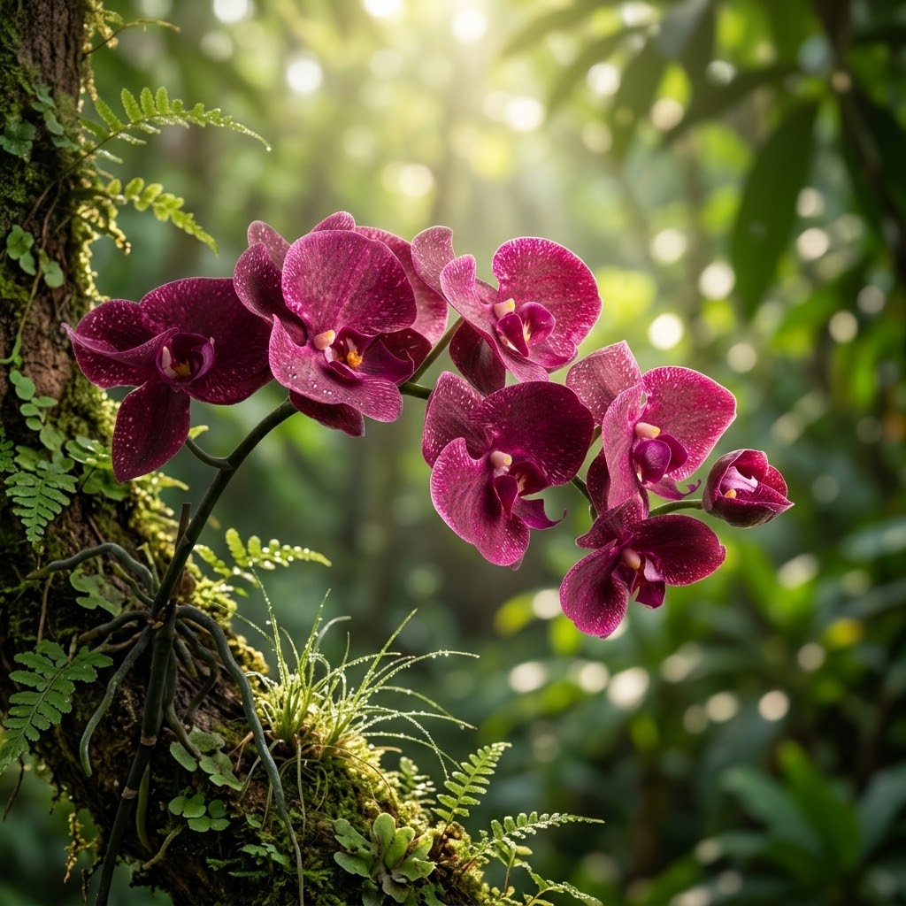
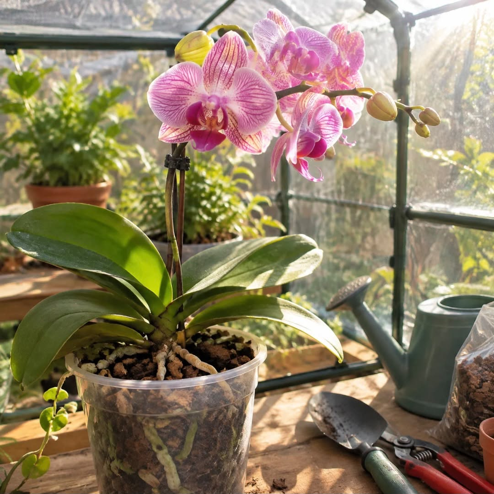
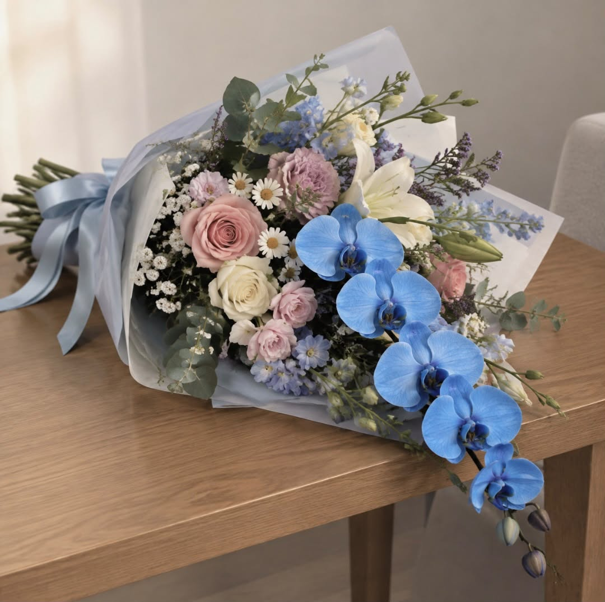
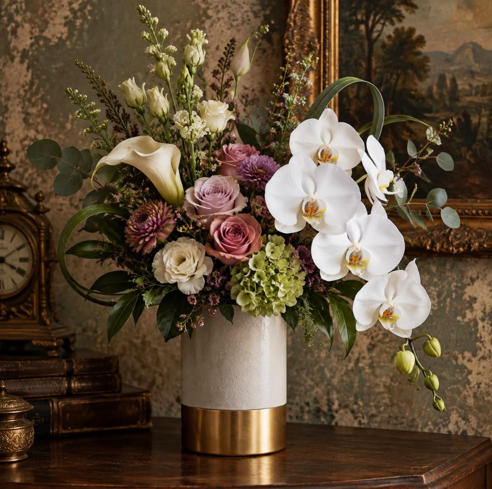
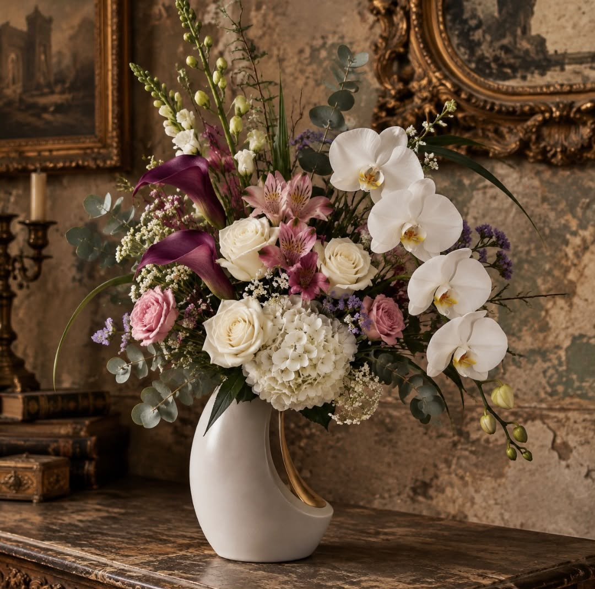
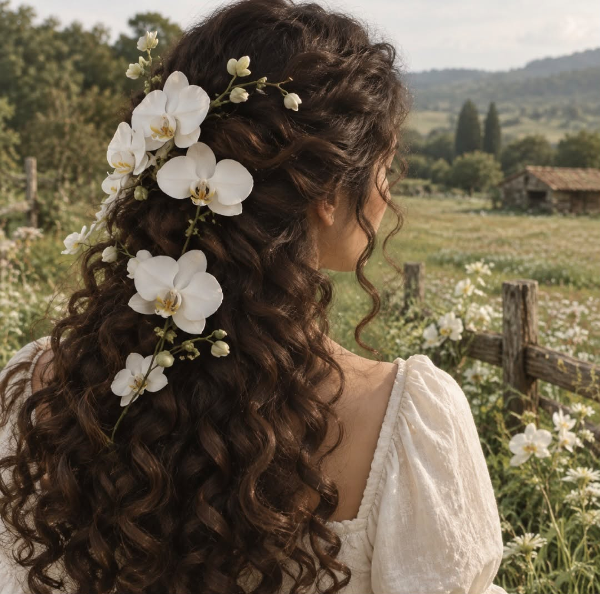
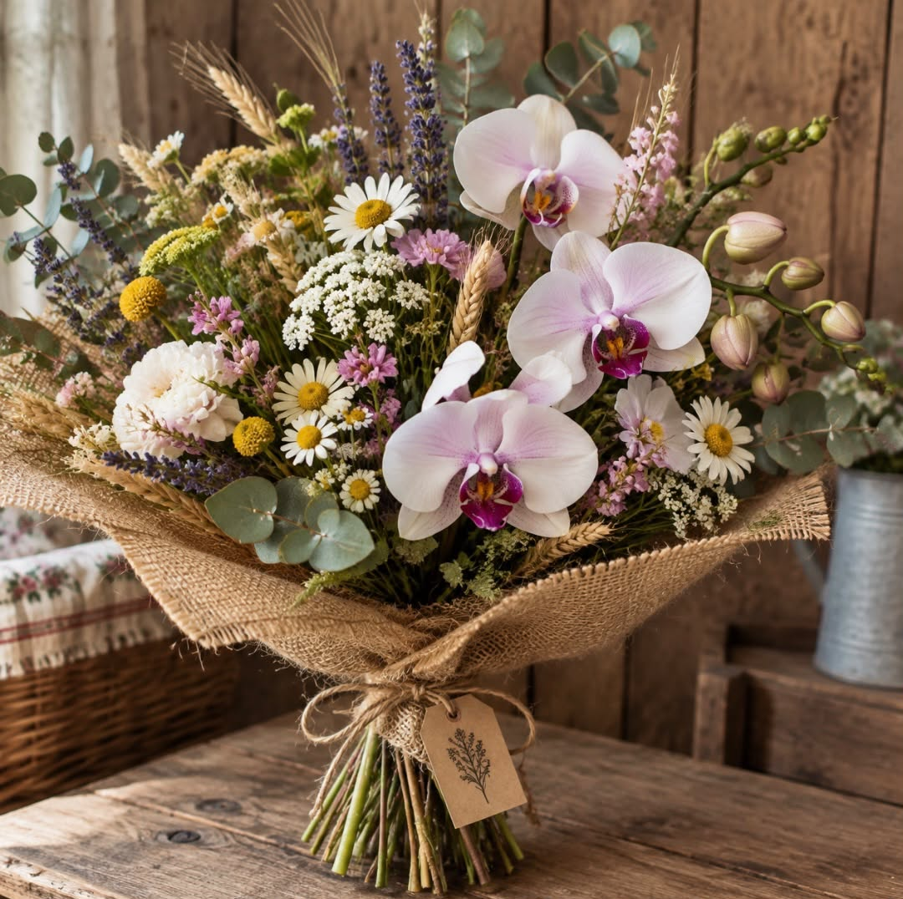
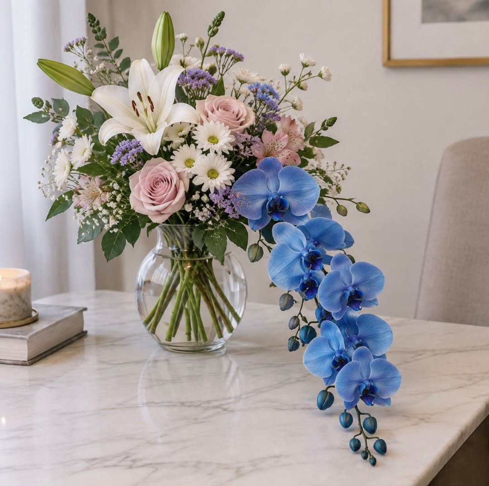

Flower Of The Month
Orchid
The Orchid is considered the jewel of flowering plants and a symbol of unique beauty, with its captivating shapes and vibrant colors that steal the show.
About Orchid Flowers
The Orchid is considered one of the most beautiful and diverse flowering plants in the world, distinguished by its unique
shapes and breathtaking colors that captivate the eye.
Belonging to the Orchidaceae family, Orchids grow in a wide
variety of environments ranging from tropical rainforests to cold regions, reflecting their remarkable adaptability.
In various cultures, this flower is often associated with beauty, elegance, and luxury, making it a favorite gift and
a wonderful choice for decorating homes and gardens.


How To Take Care Of Orchid ?
Caring for Orchids requires a delicate balance of light and water; they need bright, indirect light while avoiding direct
sunlight to prevent leaf burn. For watering, it is best to water them once a week when the bark mix dries out, ensuring
complete drainage to prevent root rot.
If the Orchids are part of a cut flower bouquet , trim
the stem ends at an angle every few days and change the water daily, adding flower food. Finally, keep them in a warm
spot away from cold drafts or direct air conditioning to prolong their bloom for as long as possible.



How To Style Orchids Bouquet ?
Orchids bring a touch of luxury and sophistication when styled in flower bouquets and vases. When arranged in glass vases,
their long stems serve as a striking centerpiece alongside broad green foliage to highlight their natural elegance.
whereas
in hand-held bouquets, they gracefully cascade to add depth and movement. Thanks to their rich variety of colors—ranging
from white and pink to purple and yellow—orchids effortlessly blend with other flowers like roses and hydrangeas.
As for
occasions, they are most commonly used for weddings, luxury congratulations, high-end celebrations, promotions, and formal
events, serving as a timeless symbol of beauty and elegance.


